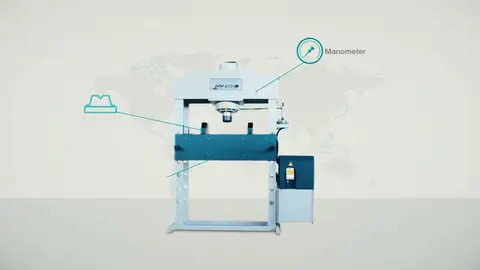
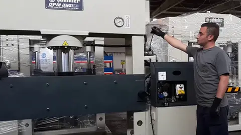

DPM hydraulic shop presses, 33 – 220 US tons
DPM 775-30 – DPM 1570-200 · 9 models



DPM 1040 × 60 Ton hydraulic shop press

DPM 1570 × 150 hydraulic shop press — double speed
Videos 1 – 2 of 2
H-frame hydraulic shop presses from 33 to 220 US tons on a welded steel frame: two-speed joystick control, a pressure gauge and relief valve against overload, height-adjustable bottom tables with a table up/down attachment and a pair of V-blocks. The cylinder stops at any position for straightening, pressing bearings and bushings, bending and assembly work; a hand pump, foot pedal and limit switch are optional. Model numbers give the working width in mm and the force in metric tons — a DPM 1040-60 is 40.9″ between the columns at 66 US tons.
- Steel construction welded frame; stops at any position
- Two-speed joystick control; pressure gauge; relief valve against overload
- Height-adjustable bottom tables with table up/down movement attachment
- A pair of V-blocks included; easy to operate
| Model | DPM 775-30 | DPM 1040-60 | DPM 1040-80 | DPM 1070-100 | DPM 1570-100 |
|---|---|---|---|---|---|
| Press force | 33 US tons (30 t) | 66 US tons (60 t) | 88 US tons (80 t) | 110 US tons (100 t) | 110 US tons (100 t) |
| Max. working pressure | 3,540 psi (245 bar) | 3,420 psi (235 bar) | 3,700 psi (255 bar) | 3,810 psi (265 bar) | 3,810 psi (265 bar) |
| Stroke | 7.9″ (200 mm) | 9.8″ (250 mm) | 9.8″ (250 mm) | 11.8″ (300 mm) | 11.8″ (300 mm) |
| Cylinder Ø (bore × rod) | 4.9″ × 3.1″ (125 × 80 mm) | 7.1″ × 4.7″ (180 × 120 mm) | 7.9″ × 4.7″ (200 × 120 mm) | 8.7″ × 6.3″ (220 × 160 mm) | 8.7″ × 6.3″ (220 × 160 mm) |
| Advance / working / return speed | 0.28 / 0.20 / 0.39 in/s (7 / 5 / 10 mm/s) | 0.31 / 0.16 / 0.39 in/s (8 / 4 / 10 mm/s) | 0.31 / 0.20 / 0.39 in/s (8 / 5 / 10 mm/s) | 0.31 / 0.20 / 0.39 in/s (8 / 5 / 10 mm/s) | 0.31 / 0.20 / 0.39 in/s (8 / 5 / 10 mm/s) |
| Bed-hole spacing (A) | 6.5″ (165 mm) | 6.5″ (165 mm) | 6.5″ (165 mm) | 7.5″ (190 mm) | 7.5″ (190 mm) |
| Working width (B)between the columns | 30.5″ (775 mm) | 40.9″ (1040 mm) | 40.9″ (1040 mm) | 42.1″ (1070 mm) | 61.8″ (1570 mm) |
| Depth (C) | 7.5″ (190 mm) | 10.2″ (260 mm) | 10.2″ (260 mm) | 9.8″ (250 mm) | 9.8″ (250 mm) |
| Motor power | 4 HP (3 kW) | 5.4 HP (4 kW) | 5.4 HP (4 kW) | 7.4 HP (5.5 kW) | 7.4 HP (5.5 kW) |
| Dimensions L × W × H | 59 × 28 × 80″ (1,500 × 710 × 2,050 mm) | 71 × 28 × 83″ (1,800 × 710 × 2,100 mm) | 71 × 30 × 83″ (1,800 × 760 × 2,100 mm) | 83 × 39 × 90″ (2,100 × 990 × 2,300 mm) | 103 × 39 × 90″ (2,600 × 990 × 2,300 mm) |
| Weight | 926 lb (420 kg) | 1,764 lb (800 kg) | 1,841 lb (835 kg) | 3,131 lb (1,420 kg) | 3,483 lb (1,580 kg) |
| Model | DPM 1070-150 | DPM 1570-150 | DPM 1070-200 | DPM 1570-200 |
|---|---|---|---|---|
| Press force | 165 US tons (150 t) | 165 US tons (150 t) | 220 US tons (200 t) | 220 US tons (200 t) |
| Max. working pressure | 3,540 psi (245 bar) | 3,540 psi (245 bar) | 4,100 psi (285 bar) | 4,100 psi (285 bar) |
| Stroke | 11.8″ (300 mm) | 11.8″ (300 mm) | 11.8″ (300 mm) | 11.8″ (300 mm) |
| Cylinder Ø (bore × rod) | 11″ × 7.9″ (280 × 200 mm) | 11″ × 7.9″ (280 × 200 mm) | 11.8″ × 8.3″ (300 × 210 mm) | 11.8″ × 8.3″ (300 × 210 mm) |
| Advance / working / return speed | 0.35 / 0.20 / 0.39 in/s (9 / 5 / 10 mm/s) | 0.35 / 0.20 / 0.39 in/s (9 / 5 / 10 mm/s) | — / 0.26 / 0.79 in/s (— / 7 / 20 mm/s) | — / 0.26 / 0.79 in/s (— / 7 / 20 mm/s) |
| Bed-hole spacing (A) | 7.5″ (190 mm) | 7.5″ (190 mm) | 9.8″ (250 mm) | 9.8″ (250 mm) |
| Working width (B)between the columns | 42.1″ (1070 mm) | 61.8″ (1570 mm) | 42.1″ (1070 mm) | 61.8″ (1570 mm) |
| Depth (C) | 11.4″ (290 mm) | 11.4″ (290 mm) | 17.3″ (440 mm) | 17.3″ (440 mm) |
| Motor power | 15 HP (11 kW) | 15 HP (11 kW) | 20 HP (15 kW) | 20 HP (15 kW) |
| Dimensions L × W × H | 83 × 39 × 92″ (2,100 × 990 × 2,350 mm) | 103 × 39 × 92″ (2,600 × 990 × 2,350 mm) | 71 × 65 × 113″ (1,800 × 1,650 × 2,850 mm) | 91 × 65 × 113″ (2,300 × 1,650 × 2,850 mm) |
| Weight | 4,189 lb (1,900 kg) | 4,850 lb (2,200 kg) | 8,929 lb (4,050 kg) | 9,921 lb (4,500 kg) |
Dimensions are overall L × W × H; working width is the clear width between the columns. Metric values in brackets are the manufacturer's nominal figures. Three-phase machines are supplied for 600 V; 208 V, 240 V or 480 V 3-phase available on request.